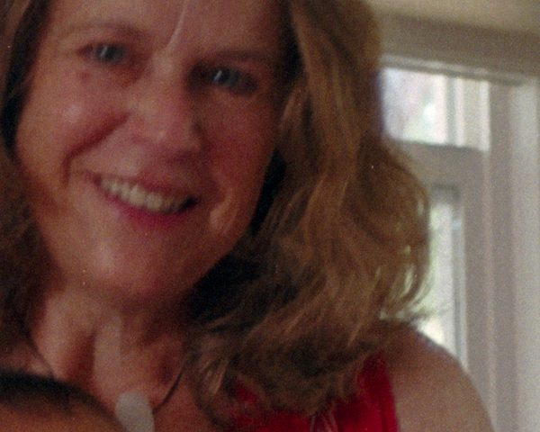
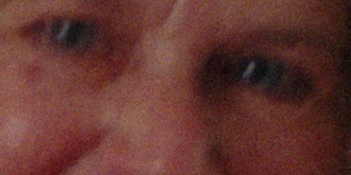
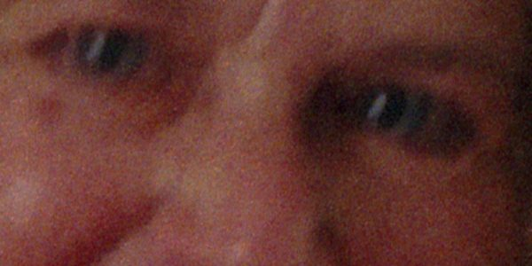
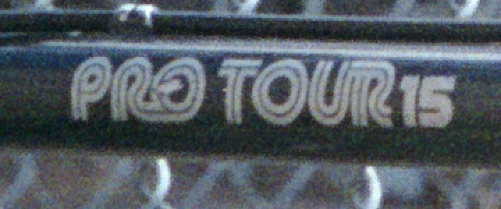
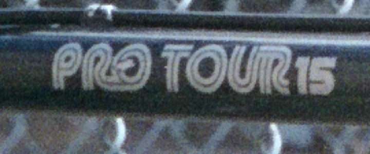

Raw DNG
Save the scanner's own linear data as a DNG that Lightroom, darktable, Negative Lab Pro, Photos and Preview open directly.
Calibrated colour
Each DNG carries Konica Minolta's own scanner calibration: the matrix and per-channel curves of its input profile. Raw converters show the same colour as the profiled TIFF.
Positive DNGs that look right
Negatives can also be saved as a ready-made positive DNG, with Minolta's film curves or a simple invert. In Preview and Photos they match the Minolta TIFF to within about 0.5 ΔE, with no extra contrast curve or black clip from the raw engine.
Multi-sampling, kept precise
Read each line 2, 4 or 8 times for about √N less noise; single bad reads are discarded. The averaged result is stored as a 16-bit float DNG instead of being rounded.
Colour profiles
Scans come out as linear 16-bit device RGB, tagged with the profile that describes them, so colour-managed apps show them correctly.
Slides
Colour slide scans embed Konica Minolta's MLTF3200p.icc (“Posi Linear”), the profile the original software used.
Negatives
Minolta-processed colour negatives embed MLTF3200n.icc (“Nega Input”). Black-and-white scans are tagged with matching gray profiles.
HDR
Dense film hides detail in noise: the shadows of slides, the highlights of negatives. HDR scans each frame twice and merges the passes.
Two exposures, aligned
The second pass is 2 stops brighter. It is aligned to the first to within a fraction of a line and merged in linear light, giving about 4× less noise in the dense areas.
With Minolta processing
HDR also works with Minolta processing. The original auto-exposure runs first, then the film curves are applied to the merged scan. Output is a raw or positive DNG.
Negatives, three ways
The scanner itself never inverts negatives. dsd4 offers three ways to handle them, for TIFF and DNG alike.
Minolta processing
The original software's pipeline, ported faithfully: autofocus, an auto-exposure prescan, a rescan at the chosen exposure, and the original film curves. It is the default, and previews can use it too.
Simple invert
Works in density, like the film itself: it removes the orange mask and balances the channels' contrast.
Raw negative
Keeps the negative as scanned, for Negative Lab Pro, darktable and similar tools to invert.
Faster autofocus
A new search finds focus with about a third of the original's lens moves, fitting the contrast peak between steps. When the centre of the frame has no detail, it tries other parts of the frame. The original sequence is still available with --af classic.
Deblur
Recovers sharpness lost to a missed focus in the camera, so the photograph itself, not the scan. The blur is measured across each frame, and frames that are already sharp are left alone.
Looks like a sharper lens
- Brightness only: colour stays as shot.
- Film grain and dust are kept out of the sharpening and added back unchanged.
- No halos around edges or dust, no blotches on skin.
Low or high
Low removes about 60% of the measured blur, high about 90%. Use it as a scan option (--deblur), a menu setting, or on existing DNGs, which stay raw:
dsd4 deblur scan.dng --level low


4000 dpi sharpness Experimental
After Norman Koren's film-scanner MTF studies: a scanner's own optics and sensor cost a 3200 dpi scan a good part of its sharpness. Undoing that loss gains more than anything else, as long as the grain isn't boosted with it.
Sharpen
Undoes the scanner's own measured blur, on brightness only. Each level of detail is boosted only where the picture is stronger than the sensor's noise, mostly at edges, and never past the finest detail the scanner records, or into halos.
Denoise
Low removes sensor and colour noise and keeps the grain; high also reduces the grain. It uses the scanner's measured noise, plus a grain profile taken from the flattest parts of each frame, like Neat Image's auto-profile.
4000 dpi
Sharpens a 3200 dpi scan and resamples it to 4000 dpi. It runs on the raw scan, before inversion or film curves, so TIFF and DNG output both benefit, and DNGs stay raw.
Measured on a razor-blade edge
| Version | Sharpness on the film (MTF50) |
|---|---|
| Original 3200 dpi scan | 44.8 lp/mm |
| Resampled to 4000 dpi by macOS (Preview) | 35.3 lp/mm |
dsd4 --experimental 4000dpi | 53.8 lp/mm |
Resampling can't add detail the scanner didn't record. What it can do is avoid softening the picture, and undo the scanner's own blur.


Calibrate your own scanner (optional)
Without calibration, dsd4 uses a typical Dual IV, measured on one unit, and sharpens at 70% strength so as not to over-correct another unit's optics. For the exact correction:
dsd4 research mtf # a razor blade taped into a slide mount, edge turned 2–20°
dsd4 research grain # a film frame with flat areas: sky or blank film
dsd4 research noise # blank film or an empty mount
dsd4 mtf scan.dng # measure any scan of the blade, to compareInstall
- Download @DOWNLOAD_FILE@ and open it.
- Connect and power on the scanner, insert a film holder and close the front door.
- Scan from Image Capture or Preview → File → Import from Scanner, or type
dsd4in Terminal for the full menu.
Uninstall with sudo /usr/local/share/dsd4/uninstall.sh. To build from source, see the README.
Command line
dsd4 on its own opens a guided menu that remembers your settings. Every feature is also a command:
dsd4 init # warm up the lamp and calibrate
dsd4 scan --frame 3 --dpi 3200 -o s.tiff # 16-bit TIFF
dsd4 scan --film nega --minolta -o n.tiff # negative, Minolta processing
dsd4 scan --format dng --samples 4 -o r.dng # raw DNG, 4x multi-sampled
dsd4 scan --film nega --minolta --hdr --format dng -o h.dng # HDR, Minolta positive
dsd4 scan --deblur low -o d.tiff # reduce camera blur
dsd4 scan --samples 2 --experimental sharpen,denoise-low -o x.tiff
dsd4 scan-all --frames 4 -o roll # a strip of four framesdsd4 --help lists every command and option.